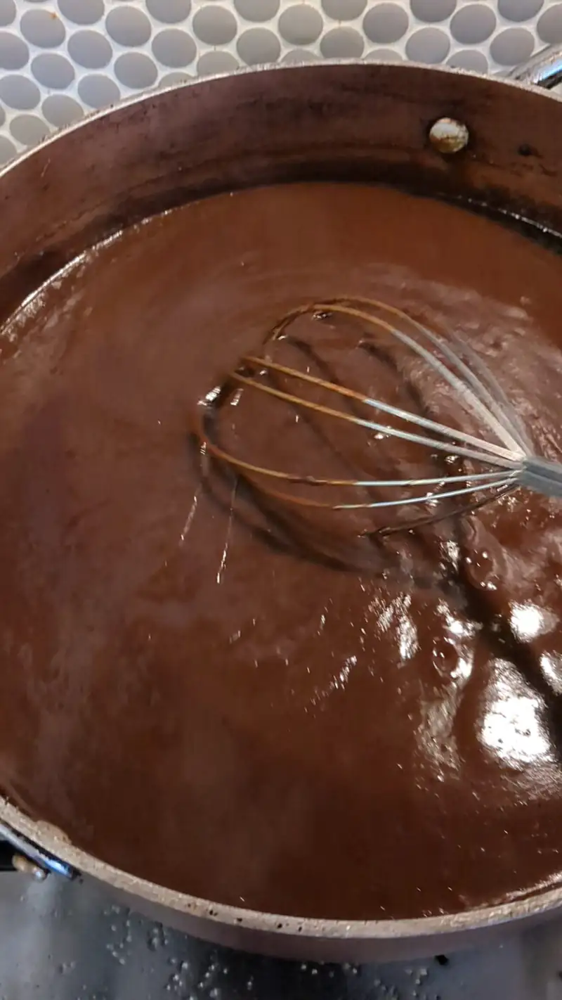
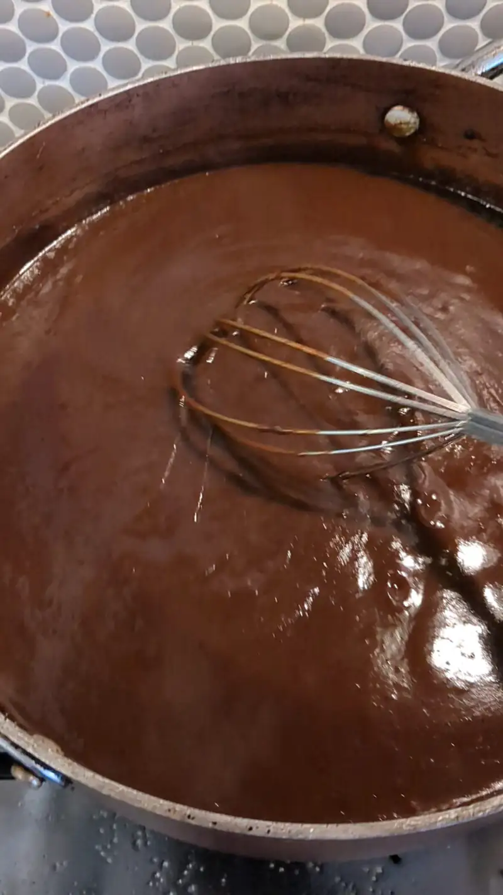

Pollo En Mole
Primero la receta, luego el bla bla bla
Ingredientes
- 3 Pechugas de pollo, o un pollo entero destazado
- 5-6 pz Pimienta negra entera
- 1/2 Cebolla
- 1 paquete de mole
Procedimiento
- Pon a cocer el pollo, pimienta y cebolla hasta que el pollo este cocido.
- Cuela el caldo, reservando la carne del pollo.
- Calienta un par de tazas o cucharones de caldo.
- Agrega la pasta del mole para empezar a disolverla, agregando mas caldo según se necesite hasta llegar a la consistencia deseada.
- Dependiendo del uso que se le vaya a dar, se puede desmenuzar el pollo para agregarlo al mole, o bien, servir encima del pollo en un plato, adornando con semillas de ajonjolí.
 
 {kind=link}

Es curioso como a veces se desencadenan algunos sucesos. El otro dia, por alguna razon se me antojo hacer cochinita pibil, locual, ok, no es TAN raro, pero como estaba cerca del mercado mexicano, pues fui por algunos ingredientes, entre ellos, hojas de platano. Curiosamente, las hojas de plarano las venden en paquetes de... ps no se cuantas, pero.. muchas mas de las que se necesitan para forrar una pierna de puerco para cochinita pibil. Asi que, aunque titubee un poco.. me decidi a hacer tamales en hoja de platano (proximanente, posts de la cochinita y de los tamales). Esta seria la primera vez que hago tamales y mucho mas raro que sean en hoja de platano. Y bueno, para no desperdiciar las hojas de platano, termine haciendo pollo en mole para rellenar los tamales. Y si, por eso fue el mole, y por eso esta tan desmenuzado, porque es con la intencion de que rellenen tamales, no tanto para comer solo.